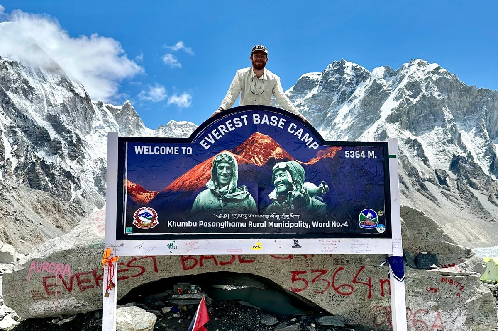

mclinduke.com
· redesign concepts
01 Editorial
02 Swiss
03 Topographic
01
Editorial Dossier · Fraunces + Inter Tight
MS
duke of the trail
40.6461° N
111.4980° W
▲
Park City, UT · 2134 m
Distance
0000 / 6500 mi
· Field Record / 2020 — Present
The path
shaped
the person.
McLin “Duke” Sanders — six thousand five hundred miles, on foot.
Est. 2020 · Mad. MS → P.C. UT
Traverse ↓
02
Swiss Field Manual · Inter Tight only
01 / HERO
· Park City, Utah · Rev. 04.26
McLin Sanders.
6,500 miles. No shortcuts.
6,500
Trail Miles
10
Major Trails
09
Countries
FAA Part 107 · Eagle Scout · BBA Ole Miss '25
→ Inquire

03
Topographic Journal · Instrument Serif + contours
Chapter I · The Trailhead
Every mile,
earned
on foot.